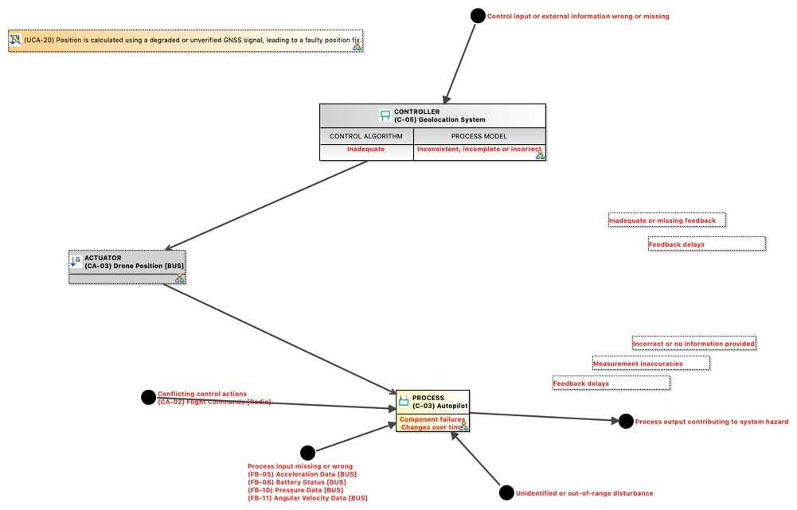

(UCA-20) Position is calculated using a degraded or unverified GNSS signal, leading to a faulty position fix.
UnsafeControlAction
GCAP_NTP241_UNINA > GCAP_NTP241_UNINA > STPA Analysis > Control Structure > (C-05) Geolocation System > Control: (C-05) Geolocation System -> (C-03) Autopilot > (CA-03) Drone Position [BUS] > (UCA-20) Position is calculated using a degraded or unverified GNSS signal, leading to a faulty position fix.No description.
Content
Control Action
Violated Constraints
 (SC-03) The drone shall switch to inertial navigation and trigger RTH (Return-To-Home) upon GPS signal loss.
(SC-03) The drone shall switch to inertial navigation and trigger RTH (Return-To-Home) upon GPS signal loss.- (SC-05) Navigation calculations shall be validated against sensor fusion confidence thresholds.
- (SC-08) Information among drone components shall happen across secure channels
Hazards
Owned diagrams
CFD Causal Factor Diagram of UCA20 Position is calculated using a degraded or unverified GNSS signal leading to a faulty position fix
